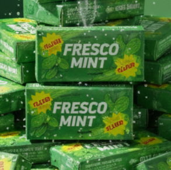
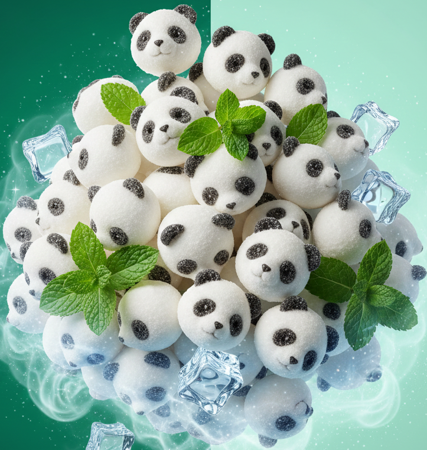
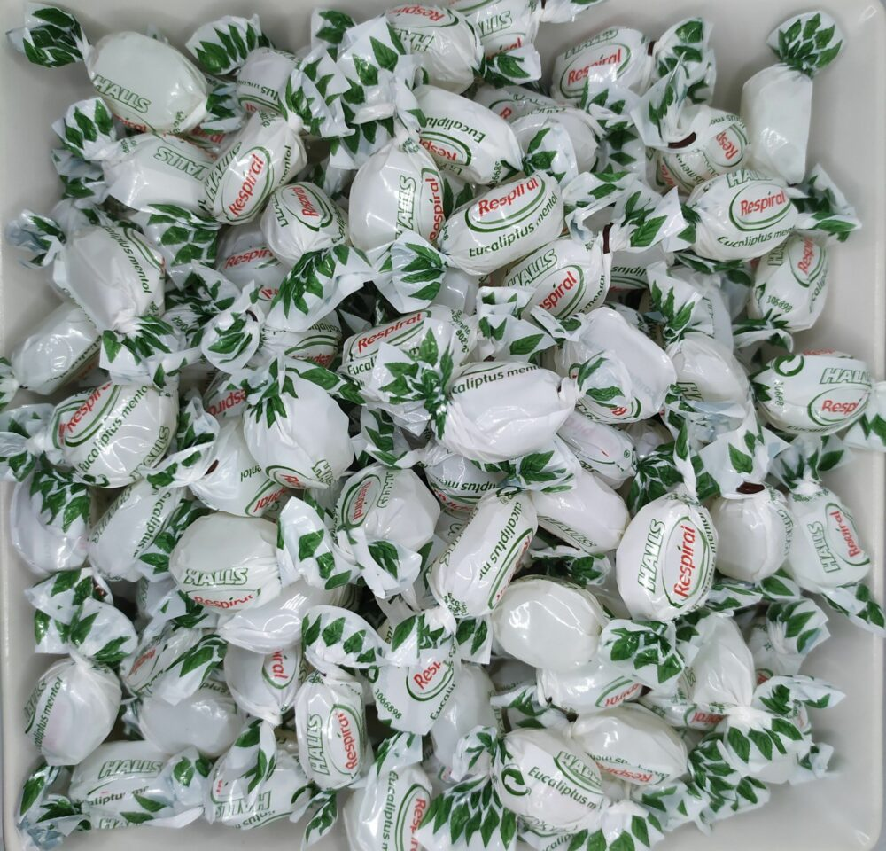
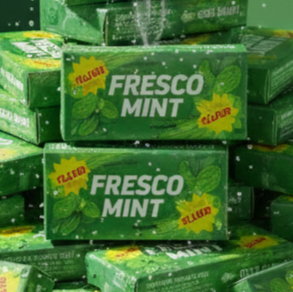
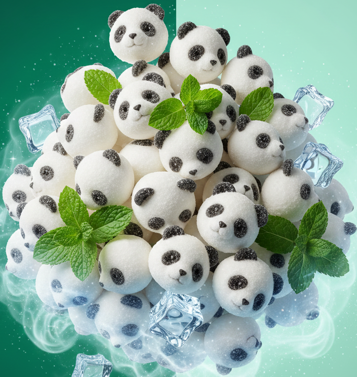
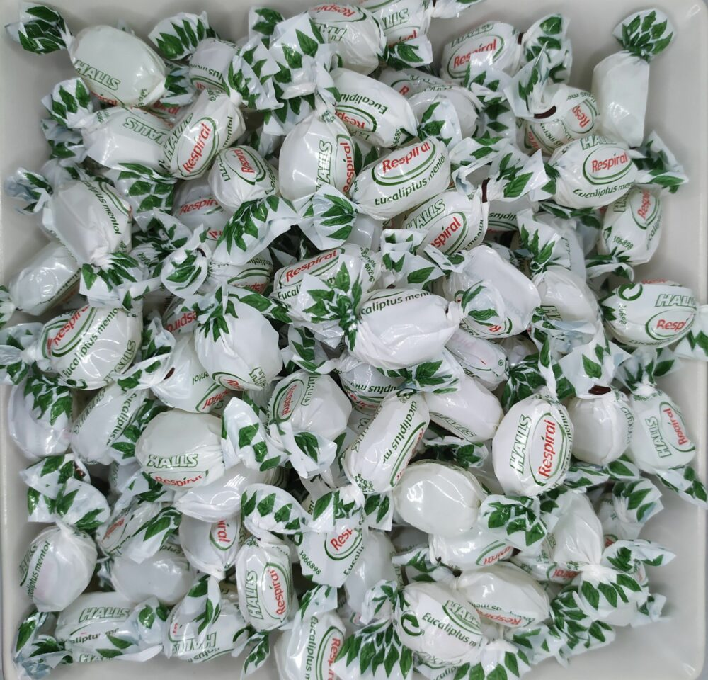

VERDE - MENTA
MENTA
FRESCA, REFRESCANTE Y CON UN TOQUE ÚNICO QUE DESPIERTA LOS SENTIDOS.
DESCRIPCIÓN
El sabor menta es una explosión refrescante que limpia el paladar y aporta una sensación de frescor incomparable. Su aroma intenso y su sabor frío hacen que cada bocado sea estimulante. Desde caramelos duros hasta gominolas cristalizadas, la menta aporta una experiencia vibrante y llena de energía.
CURIOSIDADES SOBRE LA MENTA
- La menta se usa desde la antigüedad por su efecto refrescante.
- Es uno de los sabores favoritos en caramelos y chicles.
- Su color verde se asocia a frescura, limpieza y naturaleza.
- Existen múltiples variedades: menta piperita, hierbabuena, menta verde...
PERFIL DE SABOR DETALLADO
| ATRIBUTO | VALOR | DESCRIPCIÓN |
|---|---|---|
| Frescura | ⭐⭐⭐⭐⭐ | Un frescor potente y persistente. |
| Dulzor | ⭐⭐ | Generalmente suave para no opacar la frescura. |
| Intensidad aromática | ⭐⭐⭐⭐ | Aroma herbal fuerte y característico. |
| Suavidad | ⭐⭐⭐ | Equilibrio entre frescor y textura agradable. |
TIPOS DE CHUCHES DE MENTA
- Caramelos de menta: los clásicos caramelos refrescantes.
- Gominolas mentoladas: textura suave con un toque frío.
- Chicles de menta: el formato más popular por su frescor duradero.
- Pastillas mentoladas: pequeñas, aromáticas e intensamente refrescantes.
 





OPINIONES DE CONSUMIDORES
Belén (★★★★★): “La sensación refrescante es incomparable.”
Roberto (★★★★): “Perfectas después de comer, limpian el paladar.”
Jorge (★★★★★): “El mejor sabor si quieres algo fresco y ligero.”